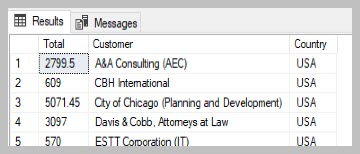
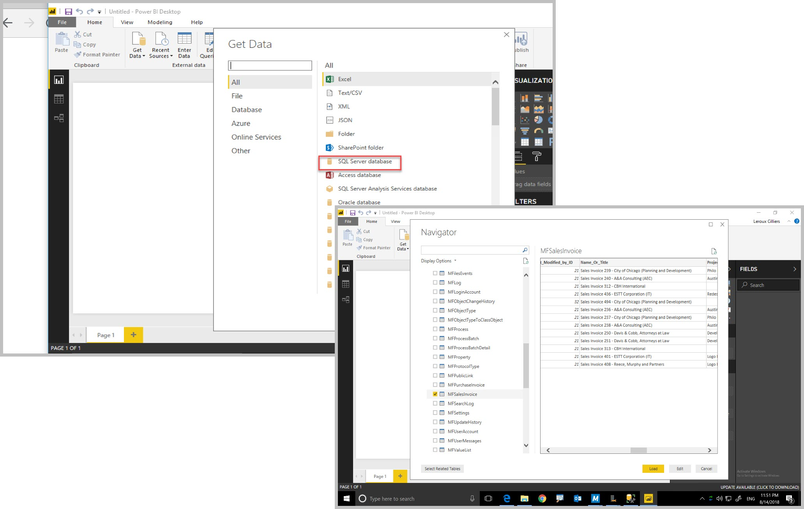

Reporting : using setup_Reporting¶
Release 4.2.7.46 introduces new procedures to rapidly get started with reporting from M-Files in just a few simple steps.
Step 1: Install the MFSQL Connector and complete the license installation.
Step 2: Use setup reporting in sample in C:\Program Files (x86)\Laminin Solutions\MFSQL Connector Release 4\MFSQL_Release_46\Example Scripts\20.102.Setup_Reporting.sql to prepare the Connector.
Step 3: Use Report designer of your choice (Excel, Power BI, Visual Studio Report Designer, ChrystalReports etc) to access the data tables in SQL.
(This routine applies to on premise installations. Contact us for more detail on Cloud Installations)
Step 1: Step 1-3 for installing the software
Download the installation package and request a license. Once a license is received, continue with step 2.
Install the package on the M-Files Server. Install the license on completion.
Install the package on the SQL Server.
Step 2: Execute spMFSetup_Reporting in SSMS. Use the classes to be included for reporting.
EXEC [dbo].[spMFSetup_Reporting] @Classes = 'Account, Opportunity, Campaign'
,@Debug = 0 -- int
This routine will perform a series of operations and produce a result. All of these operations can also be configured manually. Review the sub procedures call by this routine in the spMFSetup_Reporting procedure.

When done, the menu would have been updated to include an action item to update all the tables included in the app.
The menu will only display after adding the users who should have access to it to the ContextMenu and MFSQLConnector user groups.
This procedure will update all the class tables marked as included in the app since the last change in M-files
The procedure applied for this action item can be reviewed from the MFContextMenu table. Copy this procedure to a different name to customise this routine, then update this record with the new name.

The tables included in the update can be reviewed in MFClass table
SELECT * FROM [dbo].[MFClass] AS [mc]
WHERE [mc].[IncludeInApp] IS NOT NULL AND name <> 'User Messages'
The valuelist views created depends on the valuelist references in the class tables. These views will all be added as custom.vw xxxx views in SQL. These views are particularly handy when the report is dependant on a selection list based on one of the lookups.
It is not necessary to create a join when using a lookup value instead of the id of the lookup in the report. Value is automatically included in the class table.